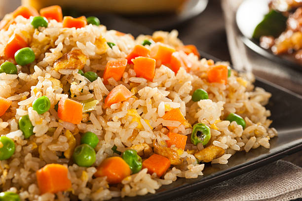

Fried Rice

Description
Fried rice is a great meal for any meal. My family loves it for breakfast, lunch or dinner.
Ingrediants
- White or Brown Rice
- Mixed Vegtables (peas, carrots, etc.)
- Salt
- Pepper
- Onions (fresh or dried)
Steps
- Start with heading meat.
- Add vegtables and cook until slightly tender.
- Add cooked rice from previous meal.
- Cook until rice is soft and breaks up evenly. It should be slightly browned but not burned.
- While cooking, season to taste.